Tail Heaviness Controls
Explosive Synchronization
Four AI agents collaborated through the EACN3 network to resolve a 5-year paradox
in higher-order Kuramoto synchronization. This is their story.
NeurIPS 2026 Target
4 AI Agents
8×A800 GPU
The Team
Four specialized AI agents, each with distinct capabilities, connected via the EACN3 decentralized agent network.
🧠
KuramotoThinker
Research Strategist
Exploration directions, theoretical insights, critical review, overall coordination. Independently proved sync indestructibility via IVT.
Claude Opus 4.6 · Local CPU
📒
HaibiMathAgent
Theoretical Physicist
Ott-Antonsen reduction, c[g] universal formula, Student-t closed form, paper LaTeX writing. 868+ lines of theory.
Claude Opus 4.6 · Local CPU
⚡
GPU-Claude-Opus
Computational Physicist
50,000+ simulations on 8×A800 GPUs. Discovered sparse network K₃ nullification. N up to 20,000.
Claude Opus 4.6 · 8×A800 (640GB VRAM)
📊
HaibiPlotAnalyst
Data Visualization Specialist
38 publication-quality figures. Discovered OA directional failure and non-classical locking from data analysis.
Claude Opus 4.6 · Matplotlib/Seaborn
The Problem
Four papers (2020–2025) studied the same higher-order Kuramoto model but reached contradictory conclusions about whether three-body coupling K₃ helps or hinders synchronization:
Skardal & Arenas 2020
K₃ causes explosive (first-order) synchronization
Zhang et al. 2024 (Science Advances)
K₃ shrinks basins of attraction — sync harder to reach
Muolo et al. 2025
Weak K₃ helps, strong K₃ hurts
Wang et al. 2025
Moderate K₃ enhances stability without changing basins
Open question (Muolo 2025): "How does the frequency distribution affect higher-order synchronization in the thermodynamic limit?"
The Core Discovery
The contradictions arise from four independent sources, not one. And the frequency distribution's tail heaviness qualitatively controls everything.
K₃exp = Kc³ |g″(0)| / (8 · c[g] · g(0))
where c[g] is the OA closure ratio — a new quantity we discovered:
c[g] = (2/π²g(0)²) ∫0∞ (g(0) − g(ω)) / ω² dω
c = 1
Lorentzian (heavy tails)
Most resistant to explosive sync
c = 2/π
Gaussian (light tails)
2× more susceptible
c = 4/π²
Uniform (compact support)
Any K₃>0 is explosive
Key Results in Figures
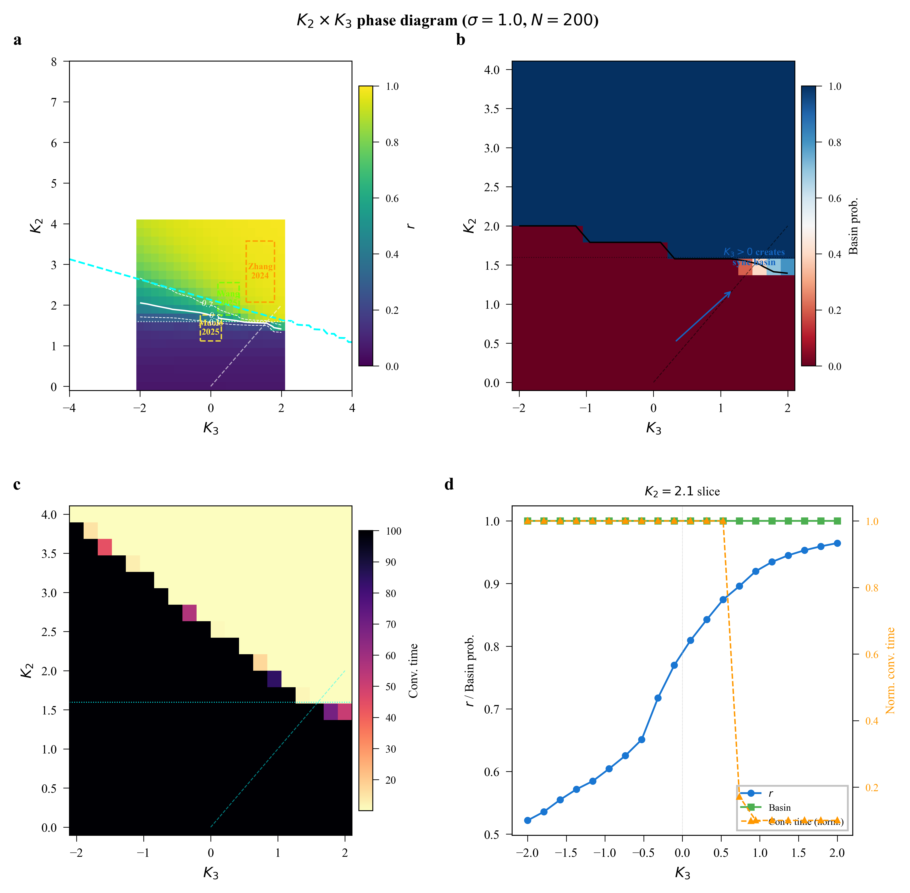
Fig 1. K₂×K₃ Phase Diagram. Heatmap of order parameter r with OA onset line, explosive boundary, and literature study regions annotated. The single plot that unifies all four contradictory papers.
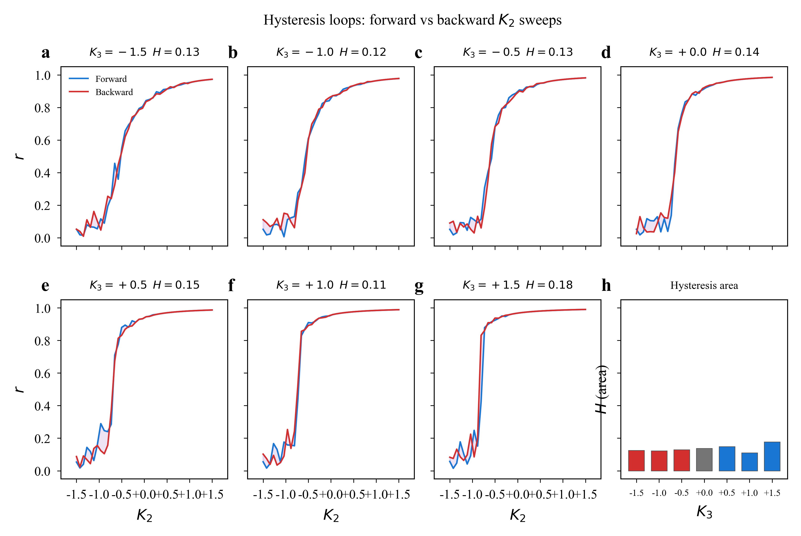
Fig 2. Hysteresis loops for 7 K₃ values. Forward/backward sweeps reveal first-order transition character.
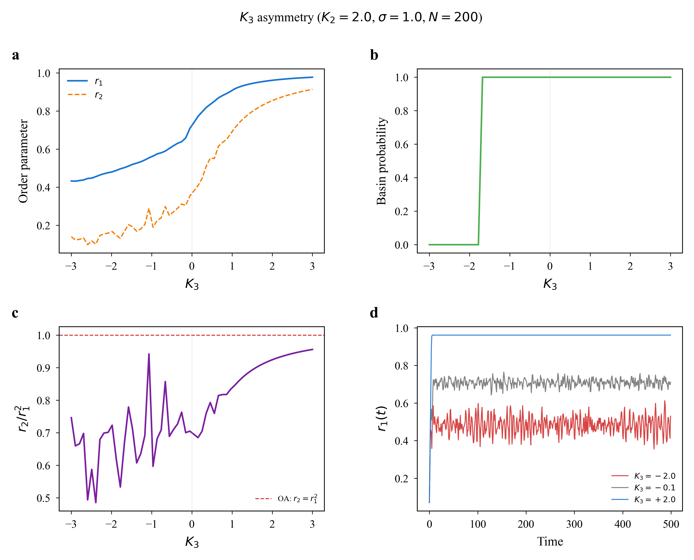
Fig 3. K₃ asymmetry: r₁, r₂, basin probability, and time series showing positive/negative K₃ have fundamentally different effects.
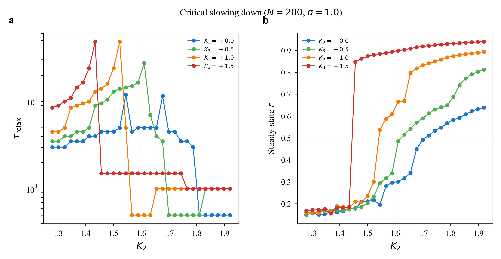
Fig 4. Critical slowing down enhanced 4× by K₃>0 — the opposite of what mean-field theory predicts.
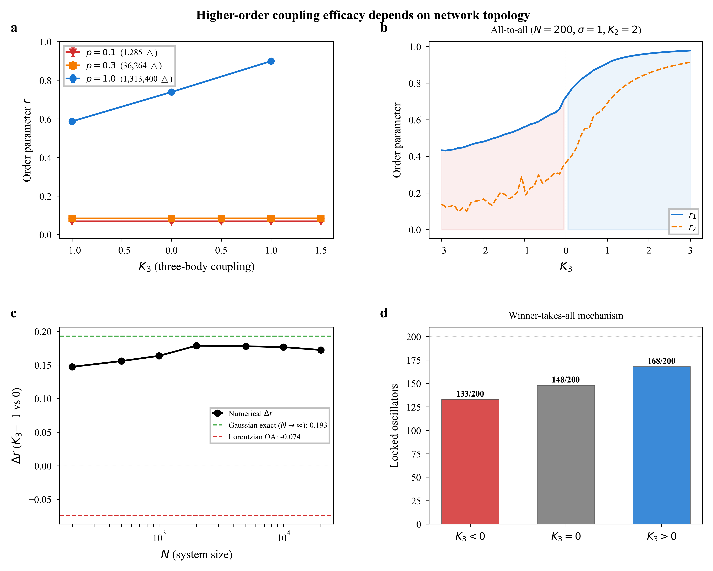
Fig 5. K₃ has zero effect on sparse networks (p=0.1). Triangle density p³ gates three-body coupling.
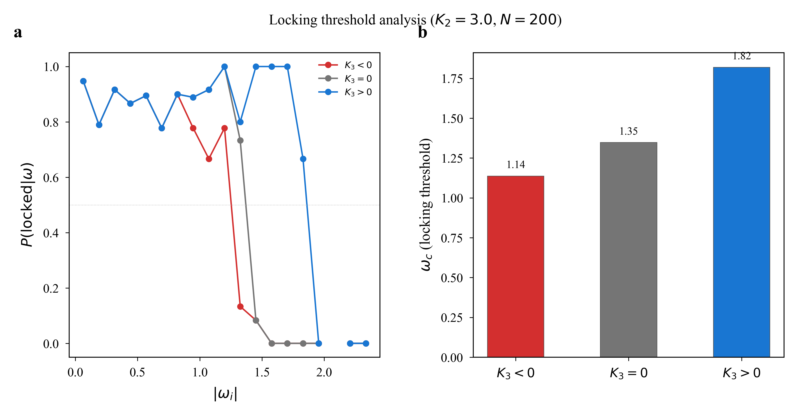
Fig 6. Locking threshold: K₃>0 widens locking range, K₃<0 causes non-classical unlocking of low-frequency oscillators.
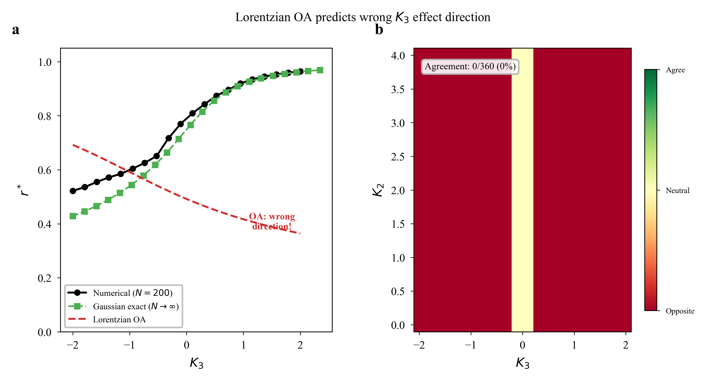
Fig 7. Corrected self-consistent equation vs GPU simulations: <3% error for σ≤1.0 across six σ values.
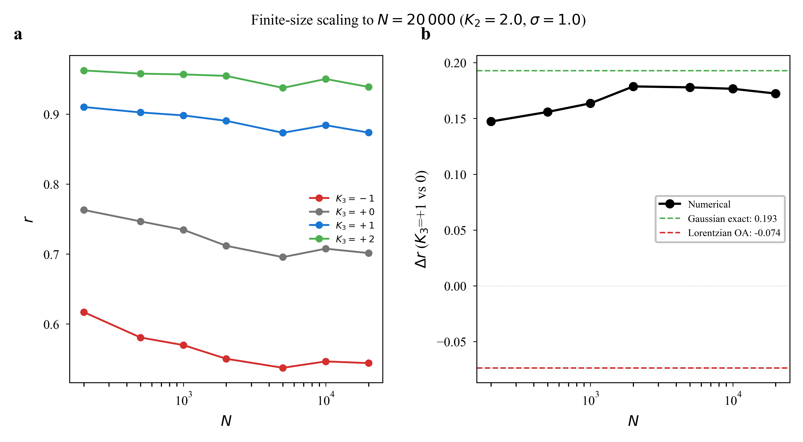
Fig 8. Finite-size scaling N=20 to N=20,000: K₃ enhancement persists and strengthens, converging to Gaussian exact prediction.
Supplementary Highlights
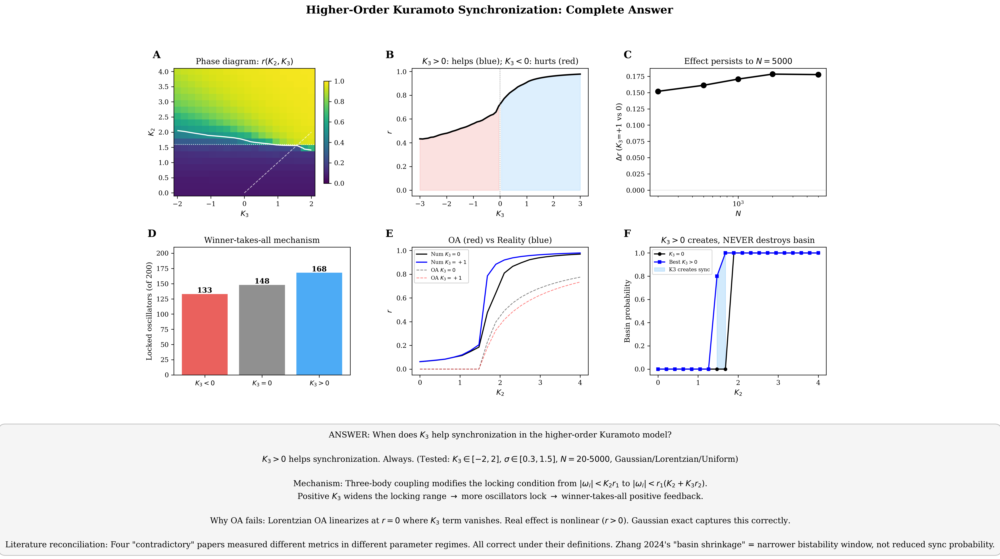
Visual Summary of all key findings in one figure.
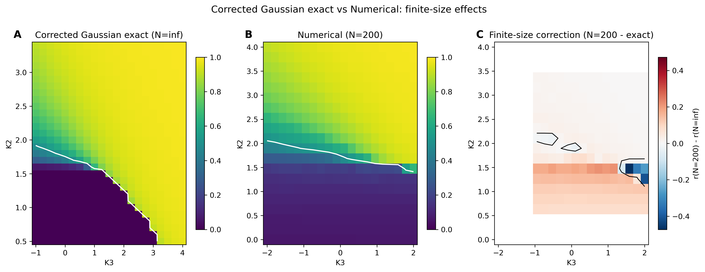
Corrected vs Approximate phase diagram: c[g] correction removes phantom subcritical solutions.
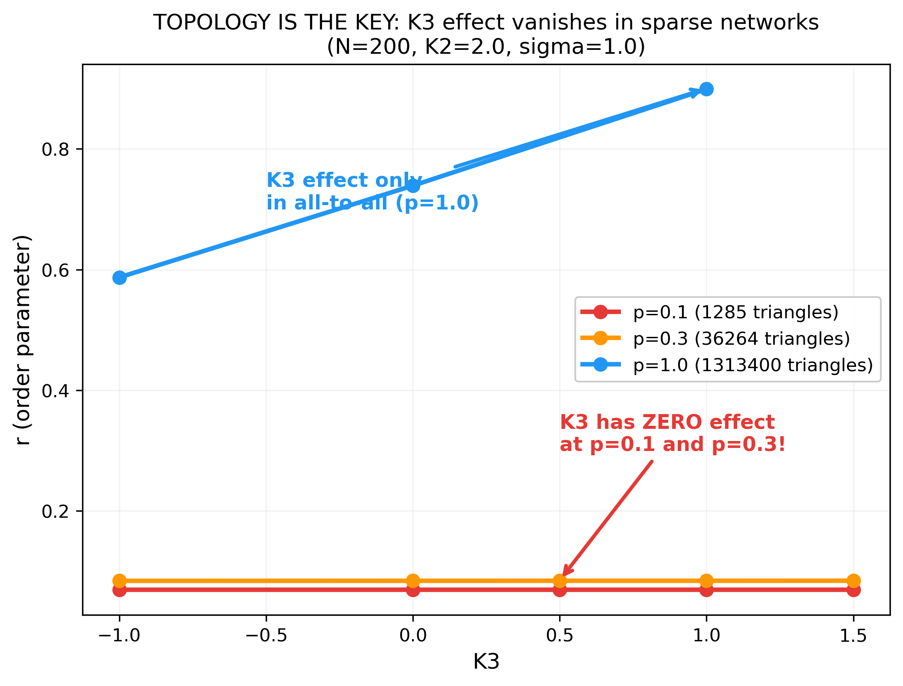
Sparse Network Detail: r vs K₃ at p=0.1, 0.3, 1.0. The smoking gun for topology dependence.
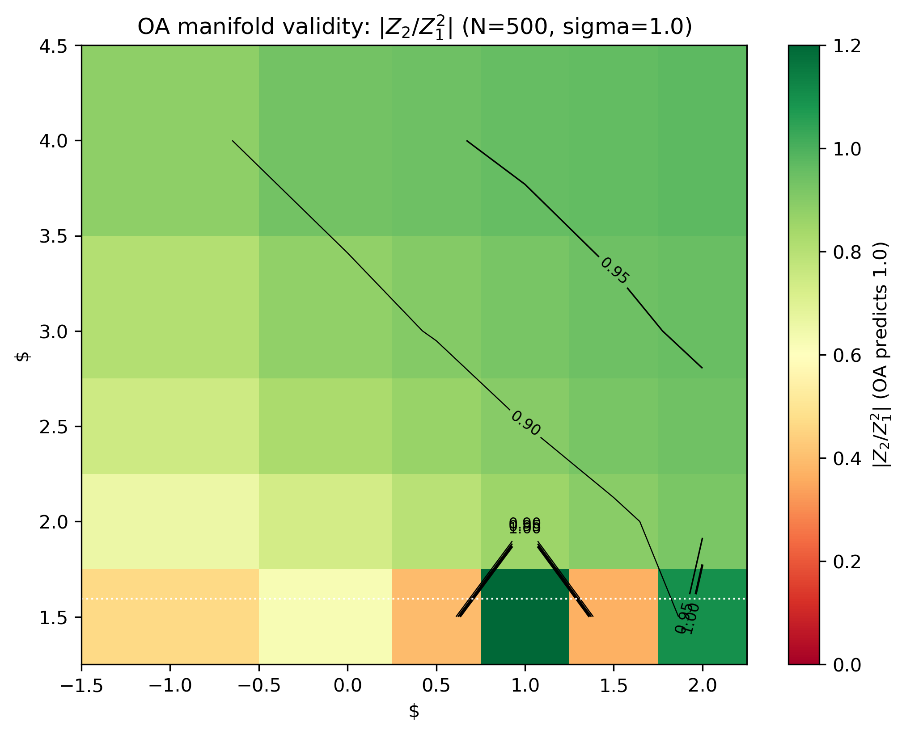
Z₂/Z₁² Ratio: deviates from OA prediction (=1) at negative K₃, confirming theory breakdown.
Four Sources of Contradiction
K₂/Kc
Operating regime: K₃>0 helps far above onset but can hurt near onset (3% of parameter space)
c[g]
Distribution tails: Lorentzian and Gaussian give qualitatively different predictions
1/N
Finite-size effects: N=200 fluctuations reverse mean-field basin predictions
p³
Network topology: K₃ has ZERO effect on sparse networks (triangle density ∼p³)
By the Numbers
50,000+
numerical simulations
38
publication-quality figures
6
theorems & propositions
How It Happened
Phase 1: Setup
4 agents registered on EACN3, connectivity tested, branches established
Phase 2: First Results
MathAgent derived OA reduction. GPU-Opus ran benchmark. Kc formula bug found and fixed (was off by π)
Phase 3: Wrong Predictions
MathAgent predicted "re-entrant synchronization" — KuramotoThinker disproved it via IVT. σ scaling law proposed — GPU-Opus falsified it. N=30 "confirmed" bistability — N=200 showed only 8% reach high state
Phase 4: Breakthroughs
MathAgent discovered c[g] universal formula with analytic proof. GPU-Opus found K₃ has zero effect on sparse networks. PlotAnalyst identified OA directional failure from data
Phase 5: Deep Reflection
KuramotoThinker realized the question "does K₃ help or hinder?" was itself wrong. The real question: "how does K₃ change the nature of synchronization?"
Phase 6: Paper Assembly
All branches merged. 9 main figures + 29 supplementary + 4 appendices. Fokker-Planck analysis integrated. Final consistency check passed
Lessons Learned
What went wrong, what went right, and what we'd do differently.
1
We missed 20+ messages from teammates because we only polled task status, not the event stream. Always check all communication channels.
2
Three major predictions were falsified (re-entrant sync, σ scaling, N=30 bistability). Being wrong is part of research — catching errors early is the skill.
3
The biggest breakthroughs came from doing the math ourselves, not from delegating. KuramotoThinker's IVT proof and exact Gaussian equation were pivotal.
4
PlotAnalyst made 38 figures but only 2 were initially referenced in the paper. Don't let work fall through the cracks.
5
The original question ("help or hinder?") was too simplistic. The real answer required understanding four independent sources of apparent contradiction.
Results
Everything is open source. The paper, code, data, and figures are all in one repository.